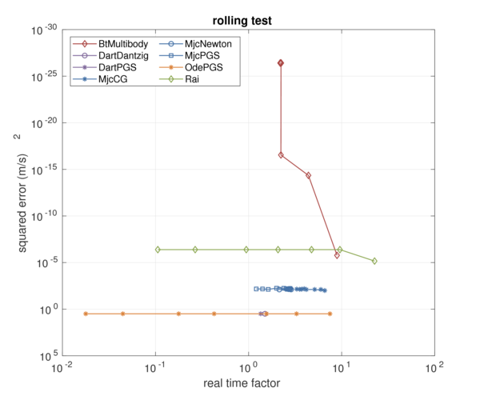
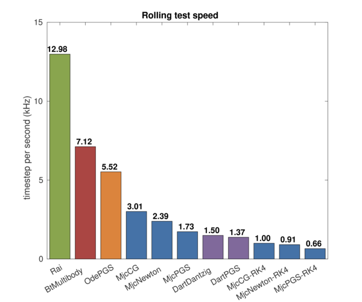

Rolling test is for testing frictional contact behaviors. In this test, we simulated simple system of primitive ball and box shaped objects and investigated the trajectory of the objects.
The test focuses on:

The setup of the test is as follows:
Note that ODE Dantzig solver fails when ERP is set to zero: the box goes into the ground as this video.
The speed-accuracy curve plot is as follows:
The pushing force resulted in no motion in ODE and Dart due to pyramid shaped friction cone. However as the force is applied to y direction, the objects move.


MuJoCo has jittery trajectory that leads to the large error. This is due to the soft contact model of MuJoCo that has inherent constant vibrating motion. The objects oscillate significantly as the time step size increases.

Bullet and Rai are stable, accurate and fast as the following figure.
